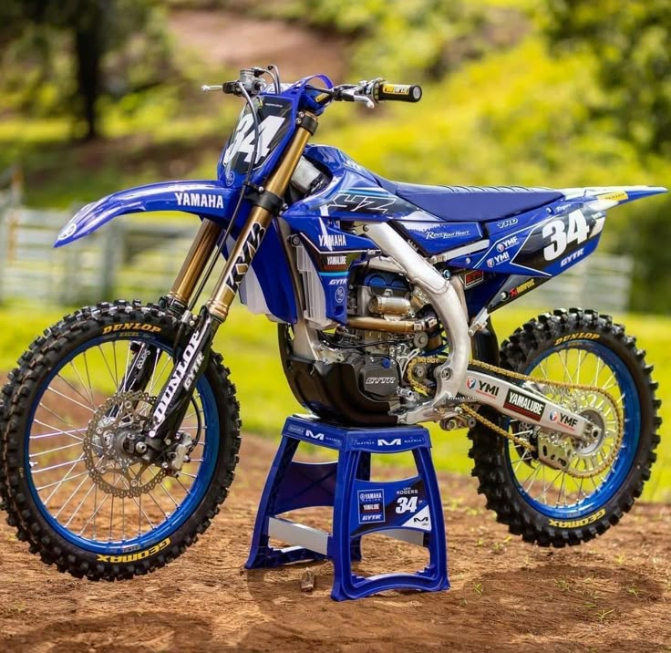
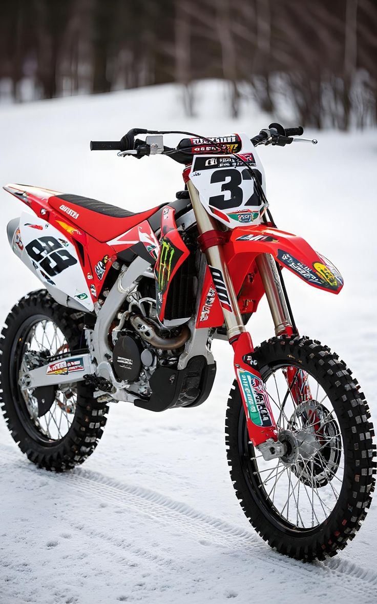

Moto usate selezionate
Ogni moto viene controllata in officina prima della consegna, con attenzione a motore e ciclistica.

Yamaha YZ 250F
Anno 2019 · 4T · Enduro allenamento
Motore controllato, sospensioni revisionate, manutenzione documentata. Perfetta per chi vuole una 250 pronta da usare.
4.500€

KTM EXC 300
Anno 2018 · 2T · Enduro
Enduro 2T con motore fresco, protezioni montate e set-up pensato per boschi e mulattiere tecniche.
5.200€

Honda CRF 450R
Anno 2020 · 4T · Motocross
Moto curata, sospensioni settate per pista, controlli periodici eseguiti. Ideale per chi gira regolarmente in crossodromo.
6.000€